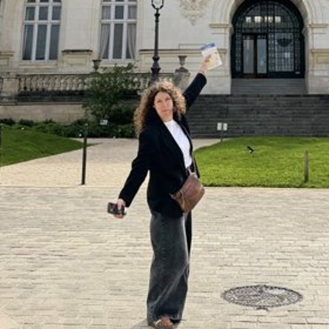

Un automne sous tension pour le commerce.
Depuis le 17 octobre, le retour des gilets jaunes rythme les week-ends. Le premier samedi, environ 3 000 commerces ont été dégradés ou pillés. Le 24 octobre, 70 000 policiers et gendarmes étaient mobilisés, et de nombreux commerçants ont baissé le rideau par précaution. À Clermont-Ferrand, certains parlent de « deux samedis à zéro de chiffre d'affaires ». Un troisième acte est annoncé pour le 31 octobre.
Dans le même temps, l'Insee publie ce 27 octobre un moral des ménages à 80 points, son plus bas niveau depuis juin 2013. Les Français jugent moins que jamais le moment opportun pour un achat important, et l'inflation qu'ils ressentent repart à la hausse.
Nos pensées vont d'abord aux commerçants touchés, et à leurs équipes.
Sources : Insee via AFP (27/10/2026), actu.fr, France 3, Le JDD, CCI France.
Le marché grandit. Mais pas partout.
Au premier semestre 2026, les médias français ont encaissé 9,75 milliards d'euros de recettes publicitaires, en hausse de 5,6 %. Derrière ce chiffre, deux mouvements opposés.
- Le digital accélère : 6,7 Md€, soit +12 %. Il pèse désormais plus des deux tiers du marché.
- Les réseaux sociaux mènent la course : 2,2 Md€, +16 %. La vidéo y représente 64 % des dépenses, en hausse de 31 %, quand les formats sociaux classiques (image, carrousel) reculent de 4 %.
- Le search reste le premier poste : 2,7 Md€, +12 %. C'est la publicité qui apparaît quand on cherche un produit sur Google ou sur un site marchand.
- Le retail media décolle : 775 M€, +18 %. En clair, la pub diffusée sur les sites des enseignes (Amazon, Carrefour, Cdiscount…), au plus près de l'acte d'achat.
- Les médias historiques reculent : télévision -6,2 %, presse -6 %, radio -3,5 %. Seul l'affichage digital progresse (+4 %).
Pour l'année, Oliver Wyman anticipe un marché digital de 13,9 Md€ (+11 %), et France Pub une croissance des investissements digitaux de +8,6 %.
Sources : BUMP S1 2026 (Kantar Media, France Pub, IREP), Observatoire de l'e-pub SRI / UDECAM / Oliver Wyman, via The Media Leader.
Webinaire : réussir vos campagnes publicitaires sur internet.
Meta, Google, TikTok, LinkedIn : chaque plateforme a ses règles, et ses pièges. Avec la CCI du Tarn, deux experts Link vous livrent en 1 h 30 ce qui fait vraiment la différence entre une campagne qui coûte et une campagne qui rapporte.
- Community manager ou trafic manager : qui fait quoi, et pourquoi c'est différent
- Choisir ses plateformes selon sa cible et son objectif
- Le score qualité : la note que Google donne à vos annonces, et qui fait baisser (ou grimper) votre coût par clic
- Le tunnel de conversion : guider un inconnu jusqu'à l'achat, étape par étape
- Mesurer, puis optimiser : les bons indicateurs à suivre
Animé par Julien Cassagne, directeur des opérations, et Martin Praquin, directeur conseil Occitanie. Ouvert à toutes les entreprises, du débutant au confirmé.
Distributeurs automobiles : votre film est déjà écrit.
Notre studio a développé un film pensé pour les distributeurs automobiles multimarques. Son point de départ : ce qui fait vraiment la différence en concession, ce ne sont pas les voitures, ce sont les femmes et les hommes qui les vendent, les livrent et les entretiennent.
Un constat chiffré : dans l'automobile, 81 % des budgets vidéo partent encore en télévision linéaire, contre 25 % sur les réseaux sociaux tous secteurs confondus (Kantar Media, T1 2026). Pour un distributeur, la vidéo sociale reste un terrain largement libre, et bien plus accessible.
Le scénario est écrit, la mise en scène est pensée. Il ne reste qu'à l'adapter à vos équipes, à vos sites et à vos marques.
- Délai de production raccourci : la phase d'écriture est déjà faite
- Un film qui met en avant vos collaborateurs, votre premier argument face à la concurrence
- Des déclinaisons pensées pour les réseaux sociaux : formats courts et verticaux, ceux que l'on regarde sur son téléphone
Comment faire tenir 15 minutes en 45 secondes ?
15 minutes de visio avec un expert Link pour faire le point sur vos campagnes et vos priorités de fin d'année.
OK pour une visio de 15 min →Sabine Braud Pailler

- SON POSTE
- Directrice de clientèle Limousin
- SON SURNOM
- La Saboche
- SON MANTRA
- « Prendre soin des gens, c'est déjà les aimer. »
- SON PLAISIR COUPABLE
- Un carré de chocolat avec chaque café, et souvent un deuxième.
- SON PETIT TRUC EN PLUS
- La reine de l'art de la table à la française.